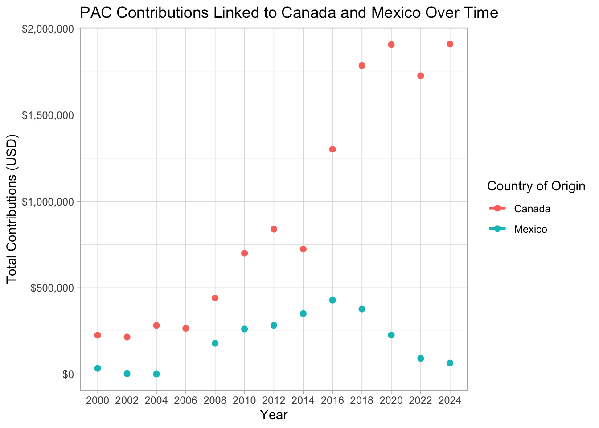

This is a two part assignment. In the first part of the assignment you will practice rectangling on a dataset from the repurrrsive package. In the second part you will combine the rvest package along with functions and iteration to scrape data on foreign linked political action committees from the website open secrets.
── Attaching core tidyverse packages ──────────────────────── tidyverse 2.0.0 ──
✔ dplyr 1.1.4 ✔ readr 2.1.5
✔ forcats 1.0.0 ✔ stringr 1.5.1
✔ ggplot2 3.5.1 ✔ tibble 3.2.1
✔ lubridate 1.9.3 ✔ tidyr 1.3.1
✔ purrr 1.0.2
── Conflicts ────────────────────────────────────────── tidyverse_conflicts() ──
✖ dplyr::filter() masks stats::filter()
✖ dplyr::lag() masks stats::lag()
ℹ Use the conflicted package (<http://conflicted.r-lib.org/>) to force all conflicts to become errors
library(repurrrsive)library(jsonlite)
Attaching package: 'jsonlite'
The following object is masked from 'package:purrr':
flatten
library(glue)
library(robotstxt)library(rvest)
Attaching package: 'rvest'
The following object is masked from 'package:readr':
guess_encoding
library(xml2)library(dplyr)library(stringr)
Problem 1: Load the repurrrsive package to get access to get access to the got_chars dataset. In section 23.4.2 of R4DS, there is code that extracts data from the got_chars list and converts it into a tibble with information on each character and a separate tibble which contains information on the titles held by each character. Perform similar operations to create separate tibbles containing the aliases, allegiances, books, and TV series of each Game of Thrones character.
chars <-tibble(json = got_chars)
chars |>unnest_wider(json)
# A tibble: 30 × 18
url id name gender culture born died alive titles aliases father
<chr> <int> <chr> <chr> <chr> <chr> <chr> <lgl> <list> <list> <chr>
1 https://w… 1022 Theo… Male "Ironb… "In … "" TRUE <chr> <chr> ""
2 https://w… 1052 Tyri… Male "" "In … "" TRUE <chr> <chr> ""
3 https://w… 1074 Vict… Male "Ironb… "In … "" TRUE <chr> <chr> ""
4 https://w… 1109 Will Male "" "" "In … FALSE <chr> <chr> ""
5 https://w… 1166 Areo… Male "Norvo… "In … "" TRUE <chr> <chr> ""
6 https://w… 1267 Chett Male "" "At … "In … FALSE <chr> <chr> ""
7 https://w… 1295 Cres… Male "" "In … "In … FALSE <chr> <chr> ""
8 https://w… 130 Aria… Female "Dorni… "In … "" TRUE <chr> <chr> ""
9 https://w… 1303 Daen… Female "Valyr… "In … "" TRUE <chr> <chr> ""
10 https://w… 1319 Davo… Male "Weste… "In … "" TRUE <chr> <chr> ""
# ℹ 20 more rows
# ℹ 7 more variables: mother <chr>, spouse <chr>, allegiances <list>,
# books <list>, povBooks <list>, tvSeries <list>, playedBy <list>
# A tibble: 93 × 2
id tv_show
<int> <chr>
1 1022 Season 1
2 1022 Season 2
3 1022 Season 3
4 1022 Season 4
5 1022 Season 5
6 1022 Season 6
7 1052 Season 1
8 1052 Season 2
9 1052 Season 3
10 1052 Season 4
# ℹ 83 more rows
Webscraping Open Secrets
In this assignment we will scrape and work with data foreign connected PACs that donate to US political campaigns. In the United States, only American citizens and green card holders can contribute to federal elections, but the American divisions of foreign companies can form political action committees (PACs) and collect contributions from their American employees.
First, we will get data foreign connected PAC contributions in the 2022 election cycle. Then, you will use a similar approach to get data such contributions from previous years so that we can examine trends over time.
In order to complete this assignment you will need a Chrome browser with the Selector Gadget extension installed.
In addition to tidyverse, you will need to install and load the packages robotstxt and rvest
Problem 2:
Check that open secrets allows you to webscrape by running the paths_allowed function on the url https://www.opensecrets.org.
Write a function called scrape_pac() that scrapes information from the Open Secrets webpage for foreign connected PAC contributions in a given year. The url for this data is https://www.opensecrets.org/political-action-committees-pacs/foreign-connected-pacs/2024. This function should take the url of the webpage as its only input and should output a data frame. The variables of this data-frame should be renamed so that they are in snake_case format (lower_case_and_underscores_for_spaces, see R4DS section 2.3). Use str_squish() to remove excess whitespace from the Country of Origin/Parent Company variables, and add a new column which records the year by extracting from the input url.
Hint: If you have trouble finding the right elements to search for using the selector gadget try looking for a table element.
Test your function on the urls for 2024, 2022, and 2000, and show the first several rows of each of the outpus. Does the function seem to do what you expected it to do?
$`2024`
# A tibble: 6 × 7
`pac_name_(affiliate)` country_of_origin/pa…¹ total dems repubs
<chr> <chr> <chr> <chr> <chr>
1 Accenture (Accenture) Ireland/Accenture plc $38,… $18,… $20,5…
2 Acreage Holdings Canada/Acreage Holdin… $0 $0 $0
3 Air Liquide America France/L'Air Liquide … $21,… $3,5… $17,5…
4 Airbus Group Netherlands/Airbus Gr… $268… $78,… $189,…
5 Alexion Pharmaceuticals (AstraZenec… UK/AstraZeneca PLC $113… $59,… $54,0…
6 Alkermes Inc Ireland/Alkermes Plc $73,… $37,… $36,0…
# ℹ abbreviated name: ¹`country_of_origin/parent_company`
# ℹ 2 more variables: country_of_origin_parent_company <chr>, year <chr>
$`2022`
# A tibble: 6 × 7
`pac_name_(affiliate)` country_of_origin/pa…¹ total dems repubs
<chr> <chr> <chr> <chr> <chr>
1 Accenture (Accenture) Ireland/Accenture plc $3,0… $0 $3,000
2 Acreage Holdings Canada/Acreage Holdin… $0 $0 $0
3 Air Liquide America France/L'Air Liquide … $17,… $14,… $2,500
4 Airbus Group Netherlands/Airbus Gr… $193… $82,… $111,…
5 Alexion Pharmaceuticals (AstraZenec… UK/AstraZeneca PLC $186… $104… $82,2…
6 Alkermes Inc Ireland/Alkermes Plc $84,… $34,… $50,0…
# ℹ abbreviated name: ¹`country_of_origin/parent_company`
# ℹ 2 more variables: country_of_origin_parent_company <chr>, year <chr>
$`2000`
# A tibble: 6 × 7
`pac_name_(affiliate)` country_of_origin/parent_compan…¹ total dems repubs
<chr> <chr> <chr> <chr> <chr>
1 7-Eleven Japan/Ito-Yokado $8,5… $1,5… $7,000
2 ABB Group Switzerland/Asea Brown Boveri $46,… $17,… $28,5…
3 Accenture UK/Accenture plc $75,… $23,… $52,9…
4 ACE INA UK/ACE Group $38,… $12,… $26,0…
5 Acuson Corp (Siemens AG) Germany/Siemens AG $2,0… $2,0… $0
6 Adtranz (DaimlerChrysler) Germany/DaimlerChrysler AG $10,… $10,… $500
# ℹ abbreviated name: ¹`country_of_origin/parent_company`
# ℹ 2 more variables: country_of_origin_parent_company <chr>, year <chr>
Problem 3:
Construct a vector called urls that contains the URLs for each webpage that contains information on foreign-connected PAC contributions for a given year (combine seq and string functions). Using the map_dfr function from the purrr package, apply the scrape_pac() function over urls in a way that will result in a data frame called pac_all that contains the data for all of the years.
years =seq(2000, 2024, by =2)urls =glue("https://www.opensecrets.org/political-action-committees-pacs/foreign-connected-pacs/{years}")pac_all =map_dfr(urls, scrape_pac)
Clean this combined dataset by separating the country of origin from the parent company (use separate_wider_delim or another tool of your choice, you will need to be cautious with some special cases in this column) and by converting the strings in the total, dems, and repubs columns into numbers. Print out the top 10 rows over your dataset after completing these steps.
Warning: There were 3 warnings in `mutate()`.
The first warning was:
ℹ In argument: `total = parse_number(total)`.
Caused by warning:
! 13 parsing failures.
row col expected actual
39 -- a number -$3,000
230 -- a number -$4,000
430 -- a number -$9,050
763 -- a number -$2,000
946 -- a number -$2,500
... ... ........ .......
See problems(...) for more details.
ℹ Run `dplyr::last_dplyr_warnings()` to see the 2 remaining warnings.
head(cleaned_pac_all, 10)
# A tibble: 10 × 8
`pac_name_(affiliate)` country_of_origin/pa…¹ total dems repubs
<chr> <chr> <dbl> <dbl> <dbl>
1 7-Eleven Japan/Ito-Yokado 8500 1500 7000
2 ABB Group Switzerland/Asea Brow… 46000 17000 28500
3 Accenture UK/Accenture plc 75984 23000 52984
4 ACE INA UK/ACE Group 38500 12500 26000
5 Acuson Corp (Siemens AG) Germany/Siemens AG 2000 2000 0
6 Adtranz (DaimlerChrysler) Germany/DaimlerChrysl… 10500 10000 500
7 AE Staley Manufacturing (Tate & Ly… UK/Tate & Lyle 24000 10000 14000
8 AEGON USA (AEGON NV) Netherlands/Aegon NV 58250 10500 47750
9 AIM Management Group UK/AMVESCAP 25000 10000 15000
10 Air Liquide America France/L'Air Liquide … 0 0 0
# ℹ abbreviated name: ¹`country_of_origin/parent_company`
# ℹ 3 more variables: country_of_origin <chr>, parent_company <chr>, year <chr>
Calculate the total contributions from PACs linked to Canada and Mexico each year and plot how these contributions change over time.
ggplot(can_mex_data, aes(x = year, y = total_contributions, color = country_of_origin)) +geom_line(size =1) +geom_point(size =2) +labs(title ="PAC Contributions Linked to Canada and Mexico Over Time",x ="Year",y ="Total Contributions (USD)",color ="Country of Origin" ) +theme_light() +scale_y_continuous(labels = scales::dollar_format())
Warning: Using `size` aesthetic for lines was deprecated in ggplot2 3.4.0.
ℹ Please use `linewidth` instead.
`geom_line()`: Each group consists of only one observation.
ℹ Do you need to adjust the group aesthetic?

Find the 5 countries who over the entire time period of the dataset have the greatest total contribution from affiliated PACs. Then calculate the total contribution for each of those countries for each year of the data and make a plot of it to visualize how the contributions have changed over time.